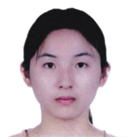
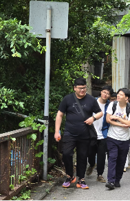
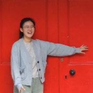
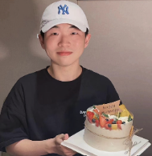
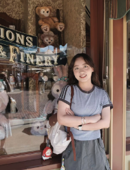
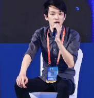
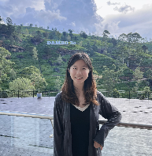
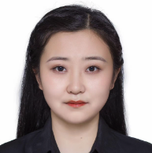
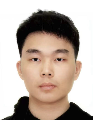

Dr. Chong ZHONG
Postdoc; Ph.D. 2020-2023.
Current and former group members supervised in research.
Postdoc; Ph.D. 2020-2023.

Full-time Ph.D.; Bayesian factor model and medical image analysis.
Full-time Ph.D.; factor-analysis learning for dynamic multi-modality data.
Full-time Ph.D.; co-supervised with Prof. CAI Jing, PolyU.

Full-time Ph.D.; co-supervised with Prof. Yi-Qing NI and Prof. Chengqi ZHANG.

Incoming Ph.D.; PolyU Presidential PhD Fellowship Scheme recipient. Begins September 2026; AI for healthcare.

Project Assistant.

Project Assistant.
2022-Present.
2023-Present; URIS.
2025-Present; URIS.
2025-Present; URIS.
2025-Present.
From Central China Normal University.
From Changchun University of Technology.
Postdoc; Associate Professor at South China Normal University.
M.Phil. and Ph.D.; Postdoc at NICHD, NIH, USA.

Ph.D.; Principal Statistician at BeiGene, China.
Ph.D.; present postdoc at PolyU.
M.Phil.; Ph.D. in financial mathematics at PolyU.

M.Phil.; Product Manager at Huawei.
M.Phil.; Ph.D. student at Department of Applied Social Sciences, PolyU.
M.S.; Research Assistant at PolyU.

M.S.; Ph.D. student at CUHK.
M.S.; collaborative Ph.D. scheme by PolyU and SIAT, CAS.
B.S.; Ph.D. student in Biostatistics at the University of Michigan.
B.S.; Ph.D. student at the University of Maryland, College Park.

B.S.; Ph.D. student at the University of Chicago Booth School of Business.